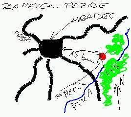
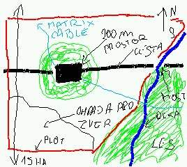

zahrano v Myslechovicich 24.01.2004
zapis a kresby :
ADB IdeaLibrary a handheldu DellAxim X5
(omluvte prosim snizenou kvalitu zaznamu)
stranka vytvorena v
PSpadu
Slecna Wendigo
predesly run - Praha 2062 - leto
Olomouc --> Hradec Kralove : leden 2062
Postavy v Olomouci kontaktovaly noveho Riggera v Samotiskach [JenDva]
Decker Vlado, jim rekl, ze po druzine nekdo jde, zda se, ze dve skupiny. jak na netu, tak fyzicky.
pri navratu do sejfhauzu, nasly vzkaz, at volaji na cislo... sejfhaus opusten. cesta na Kopecek, do Samotisek.
Bota si na pude plne harampadi rozlozil svoji magickou pracovnu a zjistil, ze zde ma idealni podminky, protoze samotna puda ma ducha veku a lidi, ktery je mu
priznive naklonen pokud neznici atmosferu pudy. Zaroven zjistil, ze uz od sejfhauzu u hrbitova je sleduje duch v podobe psa, ktery se zda byt kamos. duch oznackoval dum, pomazlil se s Botou a sel pryc.
mezitim Polozmrd zavolal na cislo, odpovedel mu sexualne hluboky zensky hlas. domluvil si schuzku ohledne prace a infa o pronasledovani pred kostelem na kopci.
na schuzku prisel jisten Cesim s odstrelovackou na strese Riggerova domu, Botou z astralu a riggerem pomoci dronu. na schodech pred kostelem sedel clovek s dohasinajicim cigarem v puse a tvari ve stinu klobouku [kostel neni osvetlen], odstrelovac si vsimnul odstrelovace na strese kostela [Polozmrd nemel headset, takze o nem nevedel].
kontakt byla zena s hlubokym zastrenym hlasem v latexovych kalhotach a bomberu s kloboukem na hlave, ktery ji stinil tvar.
vysvetlila, ze jedno sledovani byla jejich organizace zvana Furry [za prava clupatych metalidi a zvirat], druhe, ze jsou rasisti, kteri sidli v Hradci Kralove [tak na ne Furry taky prisla]. Soukromy pozemek, zamecek, 10 ha pudy, le, reka. maji chlupatou bytost, kterou chteji Furry. prace za mega.
sorbak prijal.
proklepnuti Furry: souhlasi. v podstate ekoterroristi.
cesta na zamecek do Hradce... Ceske cesty jsou desne rozbite. spousta volne zvere. spousta prirody. mesta a vesnice obydlena napul, rozpadaji se.
zamecek viz. mapka. pristup polnimi cestami.

zacalo dost snezit a mrznout -15*C.
pridala se skupina Slunko - drubezi saman, Libor-arab, demolitin man, Elf-decker; bez vybavy.
nakup v armyshopu - dovybavovani, maskovani aut. zakladna v lese na pozemku. JenDva zajistuje sondami a kamerami pozorovani.
elf-decker hleda kabely od netu, pricemz malem zmrzne.
kozelnici vnimaji kolem zamecku ochraneho ducha v podobe meluziny. slunko se jej astralne dotkne a malem zmrzne.
2.skupine dokoupena vybava+tabornicke potreby.
nalezeny kabely - pristup jedine nad rekou, ktera jeste neni zamrzla, ale je velmi studena.
Libor, jde na draty pripojit datoveho zlodeje. po ceste lesem je zaznamenan laserovym bezp. syst., ostatnim senzorum se nastesti vyhnul. kabel napojen... ztraceny mikrotechnicke kleste v proudu reky. Libor po kolena ve studene vode, ale bez nasledku, obleceni je dost.
Stale vetsi zima. -20*C, ve stanech a autech musi byt fakt prijeme.
Elf-decker se snazi prolomit kody, za 7h, by to melo jit.
ostatni planuji utok.

JenDva napadne, ze o zvirata na pozemku se musi nekdo starat.
Tlusta Hilda. plan Ziva sonda.
strelit do xictu ;]] gumovou munici, pak ovladni jednani.
uspech.
Slunko manipuluje poloomracenou Hildou s modrym xichtem po dome, pricemz ostatni sleduji vysilani kamery v jejim rukave. pri zahlednuti lopaty radi Slunkovi, aby Hildu ozbrojil ;]] nakonec, nez stihnou udusit Hildinym telem jednoho z osadky domu, a seberou mu z nocniho stolku pistoli, je Helga nalozena do auta. vzhuru k doktorovi [Slunko-Hilda tvrdil, ze jej kopnul kun do xichtu
;]].
za pomoci kradene pistole, za branou na moste chlapek Hildou-dronem zneskodnen.
postavy jej nechaly, aby nenapadne zakouzlil a pres astral varoval ostatni.
polozmrda to malem stalo zivot [manovej blesk je svine;].
Bota-souboj v astralu, kouzelnikova duse vcucnuta, po porazce do kovove rukavice, kterou Bota stale nosi.
z meluziny se stal magicky blizzard, pro kouzelniky neprostupny [duch otrhany na kosti snehovimi vlockami ;].
planovani --> frontalni utok
nejdrif dojel JenDva s autem, kulometem rozstrilel predni dvere [ignorujic to, ze elf uz ma kody a muze je normalne otevrit ;].
vstupuje utocna sonda, ktera za par vterin zmizi ve vybuchu modreho magickeho ohne [jaka byla sonda s kulometem a odstrelovacskou puskou ;]
dalsi vybuch stejne kvality od teamu 2. u zdnich dveri.
ve sklepeni, rozdeleni na tri teamy.
2 protivnici se psy a narkopistolemi - psi zabiti Liborem --> dalsi faze Libor chitil kulku do krku za S [zadny uspech v obrane, vsechny 4 v utoku].
Elf-decker :] nabiha se zbrojnim systemem prestavenym na kulomet. bez kompenzace s musi silou --> vsechno vedle --> dve dafky z uzi --> game over, bye bye Elf.
Polozmrd strili jak zbesily --> flesety do hlavy ukazaly podkozni pancir jednoho ze strazcu [ala terminator]. Dalsi vystrel, posila k zemi dalsiho polomrtveho strazce.
[2/7+1 zraneni]
nejake dalsi strileni. vetsina postav ma vazna zraneni, 80% obrancu lovi ve vecnych pustinach.
teamovi kouzelnici nahlas demoralizuji uvahami o opusteni bojiste, nacez si vyslouzi pouceni Gm, ze z boje se neutika, jinam nez na hrbitov [ostatni bojovniky, cekajici na podporu utek kouzelniku vetsinou dost nastve ;]
jedina bojeschopna postava je rigger JenDva, ktery likviduje kouzelnika obrancu --> chyti 4 sipky z narkopistoli od byvalych psovodu a jde k zemi.
kouzelnici se dostavaji ke slovu, nacez kazdy z nich nekolika malo slovy [ze by "A DOST KURVA!!!" ;] likviduji posledni dva bojeschopne obrance.

klinicke smrti spesne odvazene do nemocnice. Elf-decker-kulometcik ;]]]
situaci nezvladl, Libor-arab je zachranen i kdyz mu vyhorel datajack a centrum cichu v mozku [tomu se rika dobre nahazeny fatalak, mohl prijit treba o reflexka a zrak].
brakovani zamecku - slecna Wendigo je zachranena v dost ubohem stavu, nastesti ji Elf nezastrelil kulometem i kdyz jen malem.
Bota nasel zaznamy kouzelnika, ze kterych se dozvedel, ze rasisty pouzil jen jako kryti a jako manipulaci s cerstve se menici slecnou-orcici-wendigem. Ve skutecnosti chtel "divku" mucit tak dlouho, dokud doslova nevypusti ducha. toho pak chtel za pomoci ritualu svazat a posilit jim svou moc.
wendigo predano Furry, na Kopecku pred kostelem. Zena smeka klobouk a odhaluje svou zvireci [kocici] tvar nactilete divky kterou Polozmrd obetoval v Seattle jako zivy stit [kocky maji 9 zivotu ;].
clovek na schodech je psi saman, kteremu patril psi duch. odstrelovac na strese
je clovek.
zaplaceno o 500 tacu vic - dokonano jest.
12.2.2004 1:12:16